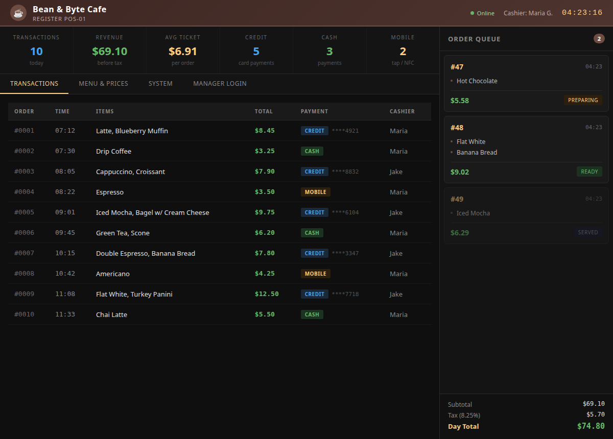
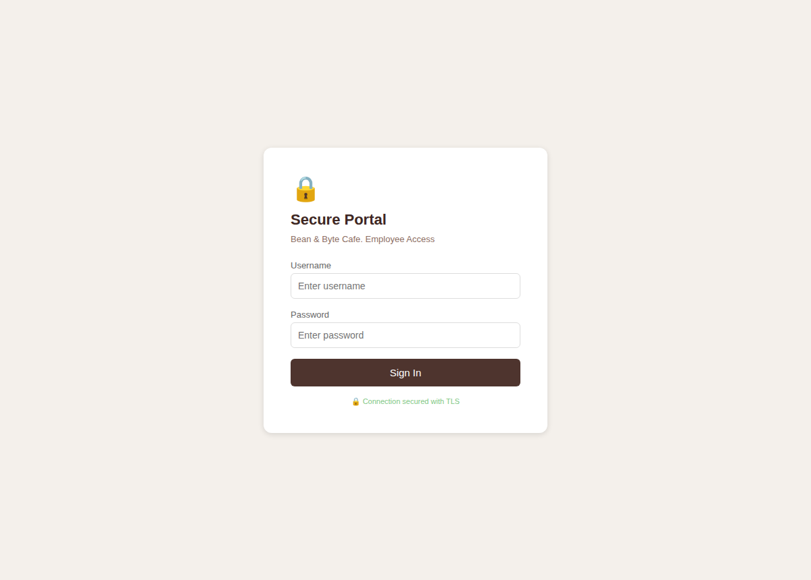
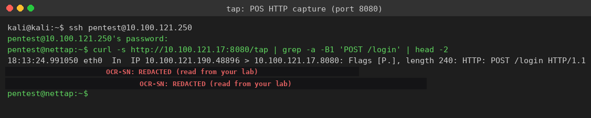
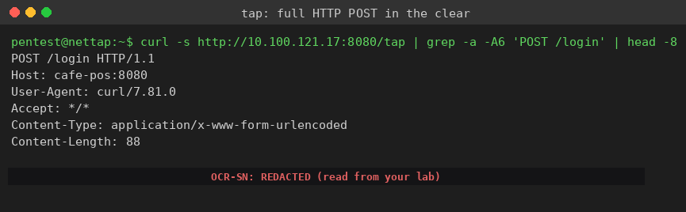
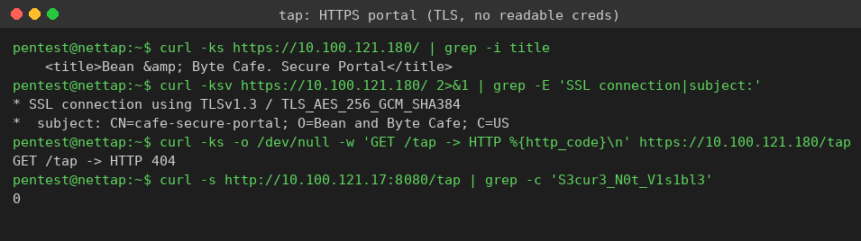

Exercise 12A: HTTP vs HTTPS: See the Difference
Engagement Status
Client: Bean & Byte Cafe Role: Security Auditor Phase: Reconnaissance Service Enumeration Exploitation ARP Encryption in Transit
What you know so far:
- You have mapped the cafe network and identified every device.
- You have performed ARP reconnaissance and spoofing attacks.
- You have learned about encryption concepts (symmetric, asymmetric, hybrid).
- The cafe is mid-upgrade: the old POS terminal still answers on plain HTTP, while a new secure portal answers on HTTPS.
Your task: Read a destination-side packet capture from two cafe services, the POS terminal on HTTP and the secure portal on HTTPS, then compare what each one reveals. The HTTP capture exposes a staff login in plain text, flag and all. The HTTPS capture protects the same kind of login behind TLS so it never appears on the wire in readable form.
Objective
Compare an HTTP service against an HTTPS service using real captured traffic. Read the cleartext credentials from the HTTP capture, confirm that the HTTPS service exposes nothing readable, and explain why that single difference, TLS, decides whether a password is private or public. Extract the flag from the plaintext HTTP traffic.
Difficulty: Beginner Estimated time: 45 minutes
Section 1: What TLS Actually Protects
The Padlock in Your Browser
TLS (Transport Layer Security) is encryption for network traffic. When the padlock icon shows in a browser address bar, TLS is protecting the data in transit. Every value sent between the browser and the server, passwords, card numbers, personal messages, is encrypted before it leaves the machine and decrypted only after it arrives.
HTTP has no such protection. An HTTP request travels as readable ASCII text. Anyone positioned to read the traffic, a destination host, a tapped switch port, a compromised router, sees the request exactly as the sender typed it.
A Brief History: SSL to TLS
| Version | Year | Status |
|---|---|---|
| SSL 2.0 | 1995 | Deprecated (insecure) |
| SSL 3.0 | 1996 | Deprecated (POODLE attack) |
| TLS 1.0 | 1999 | Deprecated |
| TLS 1.1 | 2006 | Deprecated |
| TLS 1.2 | 2008 | Widely supported standard |
| TLS 1.3 | 2018 | Latest and fastest |
SSL (Secure Sockets Layer) was the original protocol from the 1990s. The IETF renamed it to TLS when development moved over. People still say "SSL" out of habit, but every modern secure connection uses TLS. When someone says "SSL certificate," they mean a TLS certificate.
Why the Difference Matters Here
A login is a login. The POS staff login and the secure portal login carry the same kind of data: a username and a password. The only thing that changes between the two services is the transport:
- The POS terminal answers on HTTP, port 8080. The login POST crosses the wire as plain text.
- The secure portal answers on HTTPS, port 443. The same login POST crosses the wire as TLS ciphertext.
By the end of this exercise you will have read both captures with your own eyes and seen that one hands you the password and the other hands you nothing.
Section 2: How the Capture Reaches You
A Note on Where Captures Come From
A passive third host on a switched or bridged network cannot simply sniff another pair of hosts talking. The switch forwards frames only to the port that owns the destination MAC, so traffic between the login simulator and the POS never reaches an uninvolved listener.
The destination host, on the other hand, receives every byte addressed to it. In this lab each plaintext-HTTP service runs a packet capture on its own interface and publishes that capture over a small read endpoint. The POS terminal serves its running capture at http://<POS_IP>:8080/tap. You read it from the network tap, so you are looking at genuine captured packets, not a contrived text file.
The secure portal does no such thing, and it does not need to. Its traffic is already TLS ciphertext on the wire, so there is nothing readable to publish.
Network Layout
| Device | Hostname | IP Offset | Port | Transport |
|---|---|---|---|---|
| Cafe Gateway | cafe-gateway | .1 | 80/443 | mixed |
| POS Terminal | cafe-pos | .17 | 8080 | HTTP |
| Secure Portal | cafe-secure-portal | .180 | 443 | HTTPS |
| Login Simulator | cafe-login-sim | .190 | none | client |
| Network Tap | nettap | .250 | 22 | SSH |
The placeholders <SUBNET>, <POS_IP>, and <PORTAL_IP> stand in for values from your lab page. If your subnet base is 10.100.121, then the POS is 10.100.121.17, the portal is 10.100.121.180, and the tap is 10.100.121.250. The transcripts below use those exact addresses.
See Both Services in a Browser First
Before reading a single capture, open the two services in a browser so the difference between them is something you have looked at, not just something you have been told. Both pages handle a staff login. Only one of them protects it on the wire.
Browse the plain-HTTP POS terminal
From a browser on your Kali machine, open the POS register over plain HTTP. Substitute your own subnet base for <POS_IP>.
The address bar shows http:// with no padlock. The POS register loads in the clear: live transaction log, card numbers, revenue totals, and a Manager Login tab. Every byte of this page, and every credential typed into that login, crosses the wire as readable text.

Browse the HTTPS secure portal
Now open the secure portal over HTTPS in the same browser. Substitute your own subnet base for <PORTAL_IP>.
The portal uses a self-signed certificate, so the browser shows a certificate warning the first time; accept it to continue. The page is the cafe employee login, and it states Connection secured with TLS with a padlock. The login form looks the same as the POS, but the transport underneath it is TLS ciphertext, not cleartext.

Hold the two pages side by side. The POS on the left is http:// and exposes its data in the open; the portal on the right is https:// and wraps the identical kind of login in TLS. The rest of this exercise proves, from the captures, that the page you just loaded over HTTP hands its password to anyone on the wire while the HTTPS page hands over nothing readable.
Walkthrough
Step 0: SSH into the Network Tap
Start "Bean & Byte Cafe: HTTP vs HTTPS" from the Coffee Shop labs and wait for Running. Note the subnet on the lab page. All capture reading happens from the tap device, an on-subnet jump box, because you must be on the same broadcast domain as the cafe traffic.
Connect to the tap over SSH
From your Kali machine, SSH into the tap at offset .250. The password is Security1#. Replace the address with your subnet if it differs.
Once connected, the prompt changes to pentest@nettap. Everything from here runs on the tap.
Step 1: Read the HTTP Capture from the POS
The POS terminal publishes its running capture at /tap. The login simulator sends a staff login every few seconds, so within a few seconds of the lab starting there is captured traffic to read.
Pull the POS capture and find the login POST
From the tap, read the served capture and isolate the login request. The first command shows the IP header line so you can see who is talking to whom; the second pulls the line that carries the credential token.
The captured output looks like the screenshot below. The IP header line shows the login simulator at 10.100.121.190 sending to the POS at 10.100.121.17 on port 8080. The body line carries the username, the password, and the flag token, all in clear text.

Read the body line carefully:
The username is barista. The password and a token both carry the marker OCR-SN:, and the value after that marker is the flag content. Nothing here is hashed, masked, or encrypted. The wire carried the password as plainly as if it were printed on a receipt.
Step 2: See the Whole Request, Not Just the Body
The credential is not an isolated leak. The entire HTTP request is readable, headers and all, which means an observer learns the target host, the content type, the exact field names, and the values.
Read the full HTTP request from the capture
Pull a few lines of context around the POST so you can see the complete request as it crossed the wire.

A defender reading this should feel the weight of it. Anyone on the path, a malicious destination, a switch-port tap, a router admin, reconstructs the entire login with no effort and no cracking. HTTP made the password public the moment it was sent.
Step 3: Confirm the Secure Portal Protects the Same Data
Now look at the HTTPS service. The secure portal carries the same kind of staff login, but over TLS. Test three things: that the portal answers over a real TLS connection, that it offers no plaintext capture to read, and that the HTTPS credential never appears anywhere in the clear.
Probe the HTTPS portal and prove the data is protected
The -k flag tells curl to accept the portal self-signed certificate. The verbose probe prints the negotiated TLS version and the certificate subject. The last two commands show that the portal has no capture feed and that the HTTPS password is absent from the POS capture.

Read the four results together:
- The portal returns its application page, so the service is live and working.
- The connection negotiated TLSv1.3 with an AES-256-GCM cipher, and the certificate identifies
cafe-secure-portal. The traffic on the wire is genuine TLS ciphertext. - The portal has no
/tapfeed, so the request returns HTTP 404. There is no plaintext capture to read, because there is no plaintext. - The portal login password
S3cur3_N0t_V1s1bl3appears 0 times in the POS capture. Even when the same simulator sends an HTTPS login every cycle, that credential never shows up in readable form anywhere on the network.
Same login pattern, same kind of secret, opposite outcome. TLS is the only thing that changed.
Step 4: Submit the Flag
Assemble the flag
The token you read from the POS capture sits after the OCR-SN: marker in the cleartext password and token fields. Its value expresses exactly what happened: a cleartext credential exposed on the wire.
Wrap the token in the flag format and submit it:
Place the token you captured inside the OCR{} wrapper and submit it on the lab page.
Why This Matters
A password is only as private as the transport carrying it. In this exercise the POS and the portal handled the same kind of staff login, but only one of them kept it secret. HTTP put the username, the password, and a token into readable ASCII that any host on the path could lift without cracking anything. HTTPS wrapped the identical exchange in TLS, so the wire carried only ciphertext and a 404 where the plaintext capture would have been.
The lesson is not that the cafe staff chose weak passwords. The lesson is that on plain HTTP the strength of the password does not matter, because the attacker never has to guess it. TLS is what turns a readable credential into a string of random bytes. Every service that handles a login, a session cookie, a card number, or any private value belongs on HTTPS for exactly this reason. A service still answering on plain HTTP, like the cafe POS, is handing its secrets to anyone who can read its traffic.
When you audit a network, treat every plain-HTTP service that accepts sensitive input as already breached. The fix is not a stronger password. The fix is TLS.
Key Takeaways
- HTTP traffic crosses the wire as readable text; a destination-side capture exposes the full request, credentials included.
- HTTPS wraps the same request in TLS, so the wire carries ciphertext and an observer sees nothing useful.
- A TLS handshake is visible (version and cipher negotiation), but the application data after it is not.
- Password strength is irrelevant on plain HTTP, because the credential is captured rather than cracked.
- Any service accepting sensitive input over HTTP should be treated as exposed until it is moved to HTTPS.